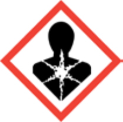

Signal word: Danger
May cause cancer. Causes damage to organs through prolonged or repeated exposure.
Prepared according to Federal Register Vol. 77, No. 58, Monday, March 26, 2012, Rules and Regulations (OSHA HazCom 2012 / GHS). The signed PDF above is the official copy.
Section 1Identification
1.1 Product identifier
- Product form
- Mixture
- Trade name
- Pave-Tech Tornado Crackfiller
- Product code
- 13050
1.2 Relevant identified uses
- Use of the mixture
- Cold pour crack filler
1.3 Supplier
Pave-Tech
1283 Tri-County Hwy
Williamsburg, OH 45176
513.528.0777
www.tornadocrackfiller.com
1.4 Emergency telephone number
- Emergency number
- 800-424-9300 CHEMTREC, 24 hours
Section 2Hazards Identification
2.1 Classification (GHS-US)
- Carc. 1A
- H350
- STOT RE 1
- H372
Full text of H-phrases: see Section 16.
2.2 Label elements (GHS-US)
Signal word: Danger
H350 – May cause cancer
H372 – Causes damage to organs through prolonged or repeated exposure
Precautionary statements (GHS-US)
- P201 – Obtain special instructions before use
- P202 – Do not handle until all safety precautions have been read and understood
- P260 – Do not breathe spray, vapours
- P264 – Wash hands, forearms and face thoroughly after handling
- P270 – Do not eat, drink or smoke when using this product
- P280 – Wear eye protection, protective clothing, protective gloves
- P308+P313 – If exposed or concerned: Get medical advice/attention
- P314 – Get medical advice/attention if you feel unwell
- P405 – Store locked up
- P501 – Dispose of contents/container in accordance with local, regional, and national regulations
2.3 Other hazards
No additional information available
2.4 Unknown acute toxicity (GHS-US)
Not applicable
Section 3Composition / Information on Ingredients
3.1 Substance
Not applicable
3.2 Mixture
| Name | CAS No. | % | GHS-US classification |
|---|---|---|---|
| Asphaltic bitumen, not cut back | 8052-42-4 | 41 – 48 | Carc. 2, H351 |
| Silica | 14808-60-7 | 0.7 – 3.3 | Carc. 1A, H350 STOT RE 1, H372 |
| Titanium(IV) oxide | 13463-67-7 | < 0.286 | Carc. 2, H351 |
| Distillates (petroleum), solvent-dewaxed heavy paraffinic, Baseoil – unspecified A complex combination of hydrocarbons obtained by removal of normal paraffins from a petroleum fraction by solvent crystallization. It consists predominantly of hydrocarbons having carbon numbers predominantly in the range of C20 through C50 and produces a finished oil with a viscosity not less than 100 SUS at 100 °F (19 cSt at 40 °C). | 64742-65-0 | > 0.1 | Carc. 1B, H350 |
Full text of H-phrases: see Section 16.
Section 4First Aid Measures
4.1 Description of first aid measures
- General
- IF exposed or concerned: Get medical advice/attention. Never give anything by mouth to an unconscious person. If you feel unwell, seek medical advice (show the label where possible).
- After inhalation
- Remove person to fresh air and keep comfortable for breathing. Allow victim to breathe fresh air. Allow the victim to rest.
- After skin contact
- Wash skin with plenty of water. Take off contaminated clothing. If skin irritation or rash occurs: Get medical advice/attention. Remove affected clothing and wash all exposed skin area with mild soap and water, followed by warm water rinse.
- After eye contact
- Rinse eyes with water as a precaution. Rinse immediately with plenty of water. Obtain medical attention if pain, blinking or redness persist.
- After ingestion
- Do NOT induce vomiting. Immediately call a POISON CENTER or doctor/physician. Rinse mouth. Obtain emergency medical attention.
4.2 Most important symptoms and effects, both acute and delayed
No additional information available
4.3 Immediate medical attention and special treatment
No additional information available
Section 5Firefighting Measures
5.1 Extinguishing media
- Suitable
- Carbon dioxide. Foam. Water. Dry chemical. Dry powder. Water spray. Sand.
- Unsuitable
- Do not use a heavy water stream.
5.2 Special hazards
- Fire hazard
- Not flammable in liquid state.
- Explosion hazard
- Product is not explosive.
- Reactivity
- Product is stable.
5.3 Advice for firefighters
- Firefighting instructions
- Use water spray or fog for cooling exposed containers. Exercise caution when fighting any chemical fire. Prevent fire-fighting water from entering environment.
- Protection during firefighting
- Do not attempt to take action without suitable protective equipment. Self-contained breathing apparatus. Complete protective clothing. Do not enter fire area without proper protective equipment, including respiratory protection.
Section 6Accidental Release Measures
6.1 Personal precautions, protective equipment and emergency procedures
- General measures
- Absorb spillage to prevent material damage.
- Non-emergency personnel
- Evacuate unnecessary personnel.
- Emergency responders – protective equipment
- Do not attempt to take action without suitable protective equipment. For further information refer to Section 8, “Exposure controls/personal protection.” Equip cleanup crew with proper protection.
- Emergency responders – procedures
- Ventilate area.
6.2 Environmental precautions
Avoid release to the environment. Prevent entry to sewers and public waters. Notify authorities if product enters sewers or public waters.
6.3 Methods and material for containment and cleaning up
- Methods for cleaning up
- Take up liquid spill into absorbent material. Soak up spills with inert solids, such as clay or diatomaceous earth, as soon as possible. Collect spillage. Store away from other materials. Notify authorities if product enters sewers or public waters.
- Other information
- Dispose of materials or solid residues at an authorized site.
6.4 Reference to other sections
For further information refer to Section 13. See Section 8, Exposure controls and personal protection.
Section 7Handling and Storage
7.1 Precautions for safe handling
- Safe handling
- Do not handle until all safety precautions have been read and understood. Obtain special instructions before use. Wear personal protective equipment. Avoid contact with skin and eyes. Do not breathe vapours. Ensure good ventilation; provide good ventilation in process area to prevent formation of vapour. Wash hands and other exposed areas with mild soap and water before eating, drinking or smoking and when leaving work.
- Hygiene measures
- Separate working clothes from town clothes. Launder separately. Do not eat, drink or smoke when using this product. Always wash hands thoroughly after handling the product.
7.2 Conditions for safe storage, including any incompatibilities
- Storage conditions
- Store locked up. Keep only in the original container in a cool, well-ventilated place away from heat sources. Keep container closed when not in use.
- Incompatible products
- Strong bases. Strong acids.
- Incompatible materials
- Avoid contact with strong oxidizers. Sources of ignition. Direct sunlight.
7.3 Specific end use(s)
No additional information available
Section 8Exposure Controls / Personal Protection
8.1 Control parameters
| Component | ACGIH | OSHA |
|---|---|---|
| Pave-Tech Tornado Crackfiller (mixture) | Not applicable | Not applicable |
| Distillates (petroleum), solvent-dewaxed heavy paraffinic, Baseoil – unspecified (64742-65-0) | Not applicable | Not applicable |
| Silica (14808-60-7) | TWA 0.025 mg/m³ | See Table Z-3 |
| Titanium(IV) oxide (13463-67-7) | TWA 1 mg/m³ (LRT irr; A3) | PEL (TWA) 15 mg/m³ |
| Asphaltic bitumen, not cut back (8052-42-4) | Not applicable | Not applicable |
8.2 Exposure controls
- Engineering controls
- Ensure good ventilation.
- Personal protective equipment
- Gloves. Safety glasses. Avoid all unnecessary exposure.
- Hand protection
- Wear protective gloves.
- Eye protection
- Chemical goggles or safety glasses.
- Skin and body protection
- Wear suitable protective clothing.
- Respiratory protection
- Wear respiratory protection. Wear appropriate mask.
- Environmental exposure controls
- Avoid release to the environment.
- Other information
- Do not eat, drink or smoke during use.
Section 9Physical and Chemical Properties
9.1 Basic physical and chemical properties
- Physical state
- Liquid
- Appearance
- Black, thick liquid with a mastic-like consistency and a mild hydrocarbon odor
- Colour
- Black
- Odour
- Very mild hydrocarbon odor
- Boiling point
- ≈ 212 °F
- Density
- ≈ 1.05 g/cm³
- Solubility (water), by component
- Lithium hydroxide monohydrate: 22.3 g/100 ml · Xanthan gum: complete · Tall oil: 0.003 g/100 ml · Tetra-sodium pyrophosphate: 6 g/100 ml · Silica: insoluble · Titanium(IV) oxide: 0.15 g/100 ml · Methyl benzimidazol-2-ylcarbamate: 0.0008 g/100 ml · Kaolin: < 0.1 g/100 ml · 3-iodo-2-propynyl butylcarbamate: 0.02 g/100 ml
- Odour threshold, pH, evaporation rate, melting/freezing point, flash point, auto-ignition and decomposition temperature, flammability, vapour pressure/density, relative density, Log Pow/Kow, viscosity, explosive/oxidising properties, explosive limits
- No data available
9.2 Other information
No additional information available
Section 10Stability and Reactivity
- 10.1 Reactivity
- Product is stable.
- 10.2 Chemical stability
- Stable under normal conditions.
- 10.3 Possibility of hazardous reactions
- Refer to 10.1 on Reactivity. Not established.
- 10.4 Conditions to avoid
- Direct sunlight. Extremely high or low temperatures. See incompatible materials.
- 10.5 Incompatible materials
- Oxidizing agents. Strong acids. Strong bases.
- 10.6 Hazardous decomposition products
- Hydrogen sulfide, sulfides. Carbon dioxide. Carbon monoxide. Fume.
Section 11Toxicological Information
11.1 Information on toxicological effects
- Acute toxicity
- Not classified
| Titanium(IV) oxide (13463-67-7) | Value |
|---|---|
| LD50 oral, rat | > 10,000 mg/kg (OECD 425; experimental value) |
| LD50 dermal, rabbit | > 10,000 mg/kg (experimental value) |
| LC50 inhalation, rat | > 6.8 mg/l/4h (experimental value) |
- Skin corrosion/irritation
- Not classified
- Serious eye damage/irritation
- Not classified
- Respiratory or skin sensitisation
- Not classified
- Germ cell mutagenicity
- Not classified
- Carcinogenicity
- May cause cancer.
| Component | IARC group |
|---|---|
| Silica (14808-60-7) | 1 – Carcinogenic to humans |
| Titanium(IV) oxide (13463-67-7) | 2B – Possibly carcinogenic to humans |
| Asphaltic bitumen, not cut back (8052-42-4) | 2A – Probably carcinogenic to humans; 2B – Possibly carcinogenic to humans |
- Reproductive toxicity
- Not classified
- STOT – single exposure
- Not classified
- STOT – repeated exposure
- Causes damage to organs through prolonged or repeated exposure.
- Aspiration hazard
- Not classified
- Potential adverse human health effects and symptoms
- Based on available data, the classification criteria are not met.
Section 12Ecological Information
- 12.1 Toxicity
- This product may cause adverse environmental effects if used improperly or released to the environment through a spill. Employ best management practices to prevent this material from entering storm sewer systems or waterways, or otherwise impacting plant and animal species.
- 12.2 Persistence and degradability
- Not established.
- 12.3 Bioaccumulative potential
- Not established.
- 12.4 Mobility in soil
- No additional information available
- 12.5 Other adverse effects
- No known ecological damage caused by this product. Avoid release to the environment.
Section 13Disposal Considerations
- Waste treatment methods
- This product, when discarded or disposed of, is not specifically listed as a hazardous waste in federal regulations. It could be designated as hazardous waste according to state regulations. This product could also become a hazardous waste if it is mixed with or comes in contact with a hazardous waste. If such contact occurs, consult 40 CFR to determine whether it is a hazardous waste.
- Disposal recommendations
- Dispose of contents/container in a safe manner in accordance with all local, state, and national regulations.
- Ecology – waste materials
- Avoid release to the environment.
Section 14Transport Information
- DOT
- Not regulated for transport. Not classified as a hazardous material under HM-181.
- ADR
- No additional information available
- Transport by sea
- No additional information available
- Air transport
- No additional information available
Section 15Regulatory Information
15.1 US Federal regulations
All components of this product are listed, or excluded from listing, on the United States Environmental Protection Agency Toxic Substances Control Act (TSCA) inventory except for:
| Component | CAS No. | Concentration |
|---|---|---|
| Lithium hydroxide, monohydrate | 1310-66-3 | 0.0117% |
| Asphalt emulsifier | — | 0.43% |
| Silica | 14808-60-7 | > 0.70% ; < 3.30% |
This product or mixture does not contain a toxic chemical or chemicals in excess of the applicable de minimis concentration as specified in 40 CFR §372.38(a) subject to the reporting requirements of section 313 of Title III of the Superfund Amendments and Reauthorization Act of 1986 and 40 CFR Part 372.
15.2 International regulations
- Canada
- No additional information available
- EU regulations
- No additional information available
- Classification per Regulation (EC) No. 1272/2008 [CLP] / Directive 67/548/EEC or 1999/45/EC
- Not classified
- National regulations
- Titanium(IV) oxide (13463-67-7) – Listed on IARC (International Agency for Research on Cancer)
15.3 US State regulations
- California Proposition 65
- This product does not contain any substances known to the state of California to cause cancer and/or reproductive harm.
- New Jersey Right to Know Hazardous Substance List
- Titanium(IV) oxide (13463-67-7); Asphaltic bitumen, not cut back (8052-42-4)
Section 16Other Information
Full text of H-phrases and classes
| Code | Meaning |
|---|---|
| Carc. 1A | Carcinogenicity, Category 1A |
| Carc. 1B | Carcinogenicity, Category 1B |
| Carc. 2 | Carcinogenicity, Category 2 |
| STOT RE 1 | Specific target organ toxicity — Repeated exposure, Category 1 |
| H350 | May cause cancer |
| H351 | Suspected of causing cancer |
| H372 | Causes damage to organs through prolonged or repeated exposure |
Hazard ratings
TBC SDS US (GHS HazCom 2012)
The information and recommendations contained herein are to the best of Pave-Tech's knowledge and belief, accurate and reliable as of the date issued. Pave-Tech does not warrant or guarantee their accuracy or reliability, and Pave-Tech shall not be liable for any loss or damage arising out of the use thereof.
The information and recommendations are offered for the user's consideration and examination, and it is the user's responsibility to satisfy itself that they are suitable and complete for its particular use. It is also the user's responsibility to make certain that it is relying upon the most recent, updated information and recommendations available from Pave-Tech.
The Environmental Information included, as well as the Hazardous Material Identification System (HMIS) and National Fire Protection Association (NFPA) ratings, have been included by The Brewer Company in order to provide additional health and hazard classification information. The ratings recommended are based upon the criteria supplied by the developers of these rating systems, together with Pave-Tech's interpretation of the available data.